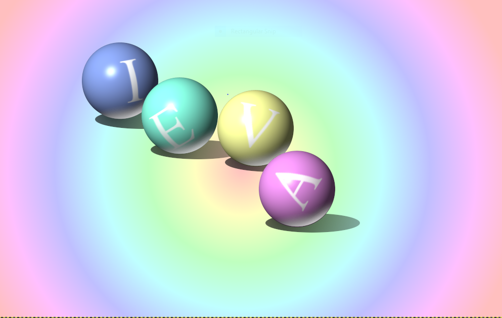
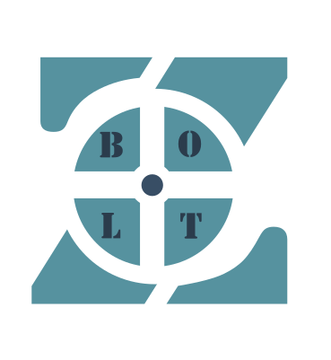
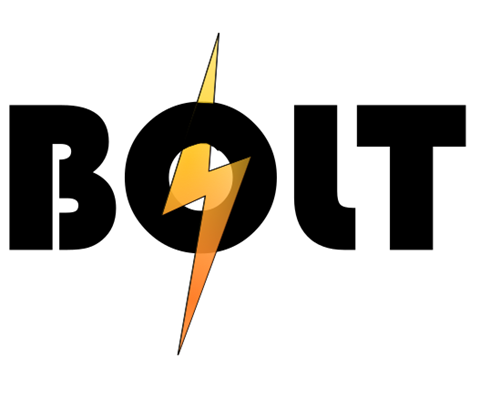

Šeit apkopoti mani darbi un mācību progress 10. klasē
1. un 2. semestra datorikas tēmas
Tabula ar ar visām tēmām, ko līdz šim esam ņēmuši
Tēma
Rastrgrafikas darbs (GIMP)
Grupu darbs, 3D modeļa izdrukai
MS Word
Video projekts
MS Excel
GIMP darbi
Mums bija jāizveido vairākas bildes
gimp vidē, apakšā pievienoju divas no tām
bildēm, kuras tika novērtētas ar ballēm.

Bildi veidoju pēc parauga, lietojot vairākus GIMP pieejamos rīkus.
Apraksts otrajam darbam
3D modelēšana
Mums vajadzēja izveidot kompāniju un izdomāt, uztaisīt logo. Kā arī izveidot logo 3d modeli.

Šis ir kompānijas logo, kuru mēs izvēlējāmies.

Attēlā ir redzams logo, kuru es izveidoju.
Bildē ir izprintētais 3D modelis.
MS Word
Apguvām jaunas lietas, kā
Video projekts
Plānotais video projekts (uzdevums mapē 1810).
Īss apraksts par video projekta mērķi un saturu:
Video Scenārijs: Kompanijas prezentācija
Nosaukums: Uzņēmuma,,BoltZ” veidošanas ceļš
1. Daļa: Grupas ideja un logotips
Video saturs:
1. Atklāšanas titul kartītē:
o Teksts: " Uzņēmuma,,BoltZ” veidošanas ceļš ".
o Pievienots viegls fona mūzikas fragments visa video garumā.
2. Paskaidrojošs teksts par kompāniju.
o Teksts uz ekrāna: "Mūsu kompānijas galvenais mērķis ir: Ir ražot inovatīvas, lielākai daļai sabiedrības pieejamas elektriskas mašīnas, kas izdalīs mazāk CO2, tādā veidā negatīvi neietekmējot vidi."
3. Logotips parādās:
o Teksts: "1. solis kompānijas veidošanā logo. Šis ir manis izveidots logo"
o Fonā: Izveidotā logo bilde
o Efekts: Animācija uz bildi: Zoom out
4. Kompānijas izvēlētais logotips parādās:
o Teksts: "Kopīgi nolēmām lietot šo logo"
o Fonā: Cita Izveidotā logo bilde
o Efekts: Animācija uz bildi: Slide down
2. Daļa: 3D objekta veidošana un drukāsāna
Video saturs:
1. Video fragmenti no 3D objekta veidošanas un drukāšanas:
o Video:
- Objekta dizaina plānošana.
- 3D drukāšanas process.
- Gala produkta salikšana kopā.
o Efekti: Kadrus šķir pārejas efekti "fade in" un "fade out"
3. Daļa: Reklāma par datorikas tēmu
Video saturs:
1. Titul kartītē :
o Teksts:
. "Kā samazināt risku zaudēt datus!"
o Efekts: Reklāmas clipam: ,,Zoom in”, Tekstam animācija ,,Float in”.
o Pievienots audio visai reklāmai: Honey tea.
2. :
o Teksts: " 1. Regulāra dublēšana, 2. Drošības risinājumi"
o Efekti: 3D datoram: Arrive no labās puses, Bultiņai: Appear, Costom Path, Zoom, Tekstam: Appear Slaidam: Switch
3. :
o Teksts: "Automatizēta dublēšana: Izmantojiet rīkus, kas regulāri veido dublējumus (piemēram, katru dienu vai nedēļu). Daudzvietīga glabāšana: Saglabājiet dublējumus dažādās vietās – mākoņkrātuvē (piemēram, Google Drive, OneDrive), ārējos cietajos diskos vai NAS ierīcēs. Versiju pārvaldība: Dublējumu sistēma, kas saglabā vairākas versijas, palīdz atgūt iepriekšējās datu versijas, ja tās tiek bojātas vai pazaudētas. "
o Efekti: Virsraksta tekstiem: Appear by letter, Pārejam tekstam: Float down, Slaidam: Zoom in
4. :
o Teksts: " 1. Regulāra dublēšana, 2. Drošības risinājumi"
o Efekti: 3D datoram: Arrive no kreisās puses, Bultiņai: Appear, Costom Path, Zoom, Tekstam: Appear Slaidam: Zoom out
5. :
o Teksts: "Antivīrusu programmatūra: Regulāri atjaunināta antivīrusu programmatūra aizsargā pret ļaunatūru un vīrusiem. Ugunsmūri un tīkla drošība: Lietojiet ugunsmūrus, lai pasargātu datus no neautorizētas piekļuves. Failu šifrēšana: Sensitīvi dati jāšifrē, lai tos būtu grūtāk nozagt vai izmantot. "
o Efekti: Virsraksta tekstiem: Appear by letter, Pārejam tekstam: Float down, Slaidam: Zoom in
4. Daļa: Noslēgums un titri
Video saturs:
1. Noslēguma titul kartītē:
o Teksts:
- "Autore: Ieva Zute."
- "Izmantotie resursi: ,,.Cap cut, power point, manis filmēt video."
- Audio: No cap cut: Chill out in the lounge at night, Honey tea
o Efekts: Tekstam: Credits.
2. Beigu fona mūzika.
MS Excel
Mēs mācijāmies jaunas lietas kā pivot table, grafikus,
formulu veidošanu ar if un jaunus saīsinājumus. Strādājām vairākas nedēļas ar uzdevumu lapām.